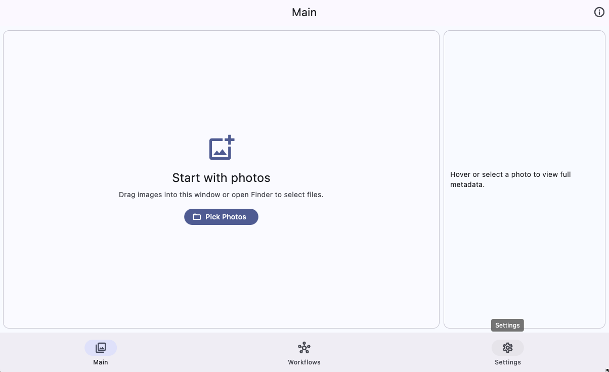
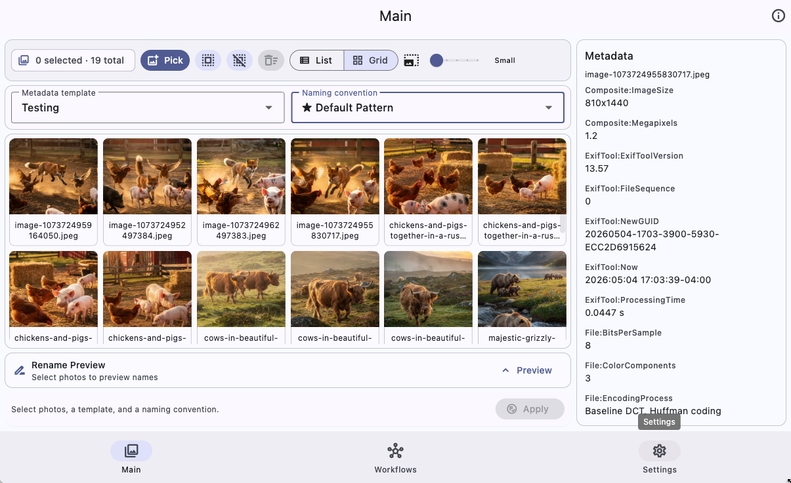
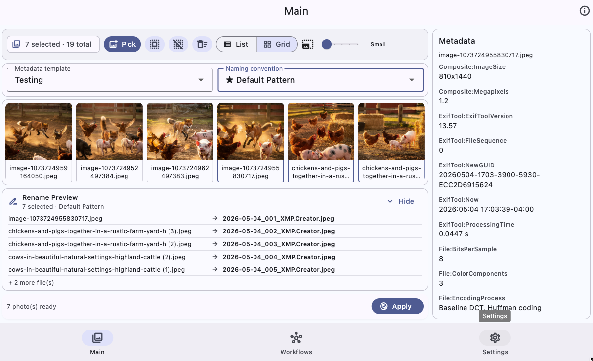
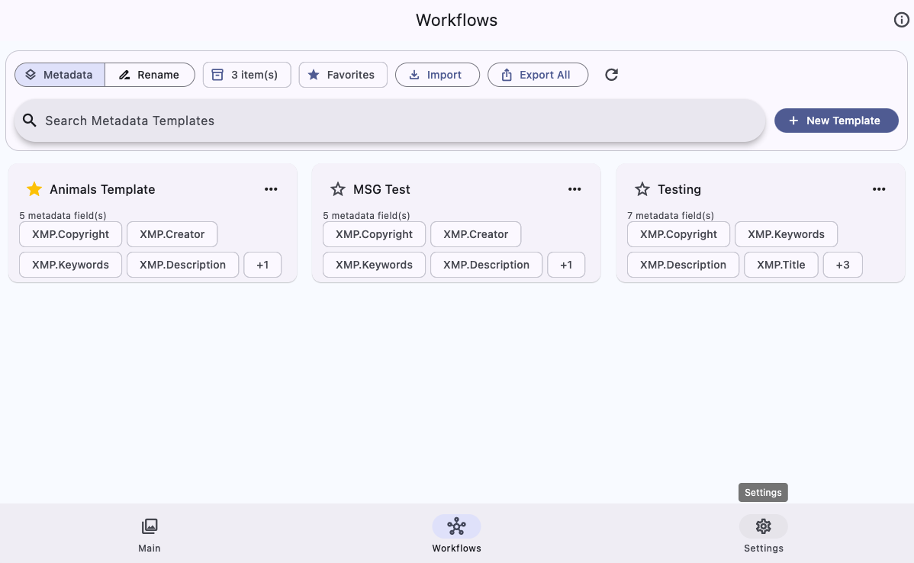
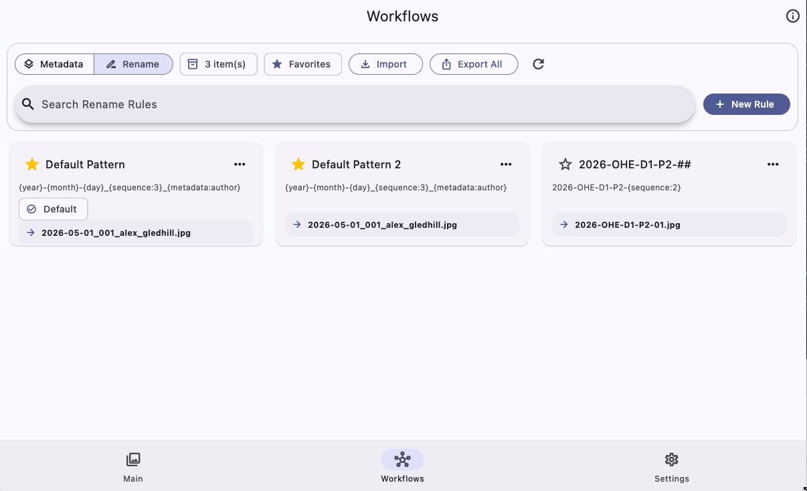
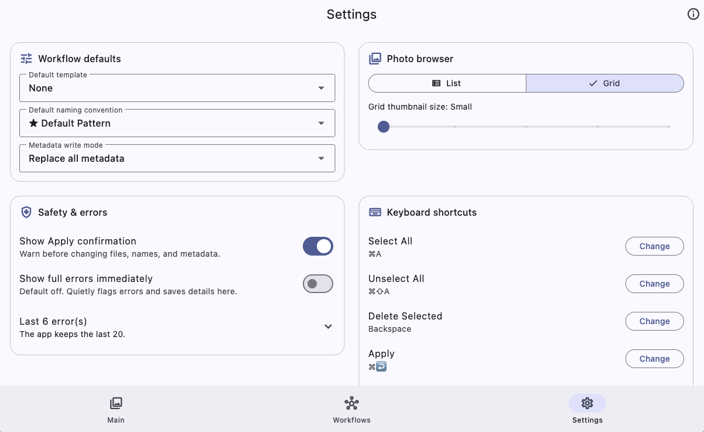

1) Import photos
Open the app and click Pick Photos, or drag files directly into the Main screen.
Documentation Center
From first import to production-ready batch output — this guide helps you onboard quickly and troubleshoot effectively.
Use this path for your first successful batch in under five minutes. If you prefer a screenshot walkthrough, open the visual user guide.
Open the app and click Pick Photos, or drag files directly into the Main screen.
Choose the metadata template and naming convention that fit the batch.
Check selected photos, metadata intent, and generated filenames before applying.
Accept the confirmation prompt, then spot-check a few files to confirm the result.
Templates standardize metadata entry and reduce repetitive editing across shoots.
Use naming conventions to generate consistent output without manual renaming.
Always verify generated names before applying to a full folder.
Use predictable sequence patterns for sorting and archive continuity.
When testing a new scheme, start with copied files to avoid accidental overwrite surprises.
Template + naming convention creates a fast, repeatable production loop.
Reference screenshots for onboarding, release notes, and support messages. The full screenshot walkthrough lives in the visual user guide.






Embed your official setup and workflow tutorial for visual onboarding.
Watch more tutorials on my YouTube channel
Open YouTube ChannelStart here when something behaves unexpectedly. Most issues fall into permissions, unsupported metadata fields, naming patterns, or app settings.
Check macOS System Settings for file/folder access permissions. You can also drag images into the Main screen as a workaround while permissions are being fixed.
Certain embedded tags, especially color/profile data, may be preserved because removing them can affect image appearance. If a specific tag should be removed, include the exact tag name and file type in a bug report.
Resize once and close normally; the app restores the last window dimensions on next launch.
By default, full error details are not shown immediately. Open Settings → Safety & errors to review the recent error log, or enable Show full errors immediately if you want detailed messages on screen.
No. The app is local-first. Photos and metadata are processed on your computer rather than uploaded to a cloud service.
Start with Title, Description/Subject, Tags/Keywords, Headline, Creator/Author, and Copyright. These fields cover most publishing and archive workflows.
Metadata templates write values into image metadata. Rename rules generate filenames. A normal batch uses one of each.
Yes. Use the three-dot menu on an item in Workflows and choose Set as Default, or choose defaults in Settings.
A sequence token helps prevent duplicate names when several photos share the same date, title, or metadata values.
Yes. Open Settings → Keyboard shortcuts to customize Select All, Unselect All, Delete Selected, Apply, and Pick Photos.
Review selected photos, confirm the template and rename rule, inspect the rename preview, and keep the Apply confirmation enabled. For new workflows, test on copied files first.
Open Settings → Safety & errors. The app keeps the most recent errors there and includes them when you use Copy Bug Details.
The Linux build is distributed as an AppImage. The website also provides optional install and uninstall scripts for convenience.
Open the visual user guide for a screenshot-based walkthrough of the Main, Workflows, and Settings screens.
Open Settings in the app and use Copy Bug Details before filing an issue.